공조냉동기계기사(구) (2015-03-08 기출문제)
1과목: 기계열역학
1. 온도 T1 고온열원으로부터 온도 T2의 저온열원으로 열량 Q가 전달될 때 두 열원의 총 엔트로피 변화량을 옳게 표현한 것은?
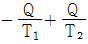
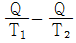
- Q(T1+T2)/T1ㆍT2
- T1-T2/Q(T1ㆍT2)
(정답률: 59%)

2. 어떤 이상기체 1kg이 압력 100 kPa, 온도 30℃의 상태에서 체적 0.8m3을 점유한다면 기체상수는 몇 kJ/kgㆍK인가?
- 0.251
- 0.264
- 0.275
- 0.293
(정답률: 70%)
3. 카르노 사이클에 대한 설명으로 옳은 것은?
- 이상적인 2개의 등온과정과 이상적인 2개의 정압과정으로 이루어진다.
- 이상적인 2개의 정압과정과 이상적인 2개의 단열과정으로 이루어진다.
- 이상적인 2개의 정압과정과 이상적인 2개의 정적과정으로 이루어진다.
- 이상적인 2개의 등온과정과 이상적인 2개의 단열과정으로 이루어진다.
(정답률: 70%)
4. 증기압축식 냉동기에는 다양한 냉매가 사용된다. 이러한 냉매의 특징에 대한 설명으로 틀린 것은?
- 냉매는 냉동기의 성능에 영향을 미친다.
- 냉매는 무독성, 안정성, 저가격 등의 조건을 갖추어야 한다.
- 우수한 냉매로 알려져 널리 사용되던 염화불화 탄화수소(CFC) 냉매는 오존층을 파괴한다는 사실이 밝혀진 이후 사용이 제한되고 있다.
- 현재 CFC냉매 대신에 R-12(CCI2F2)가 냉매로 사용되고 있다.
(정답률: 76%)
5. 대기압 하에서 물의 어는 점과 끓는 점 사이에서 작동하는 카르노사이클(Carnot cycle) 열기관의 열효율은 약 몇 %인가?
- 2.7
- 10.5
- 13.2
- 26.8
(정답률: 64%)
6. 과열기가 있는 랭킨사이클에 이상적인 재열사이클을 적용할 경우에 대한 설명으로 틀린 것은?
- 이상 재열사이클의 열효율이 더 높다.
- 이상 재열사이클의 경우 터빈 출구 건도가 증가한다.
- 이상 재열사이클의 기기비용이 더 많이 요구된다.
- 이상 재열사이클의 경우 터빈 입구 온도를 더 높일 수 있다.
(정답률: 53%)
7. 물질의 양을 1/2로 줄이면 강도성(강성적) 상태량의 값은?
- 1/2로 줄어든다.
- 1/4로 줄어든다.
- 변화가 없다.
- 2배로 늘어난다.
(정답률: 71%)
8. 단열된 용기 안에 두 개의 구리블록이 있다. 브록 A는 10kg, 온도 300 K이고, 블록 B는 10kg, 900 K이다. 구리의 비열은 0.4kJ/kgㆍK일 때, 두 블록을 접촉시켜 열교환이 가능하게 하고 장시간 놓아두어 최종 상태에서 두 구리 블록의 온도가 같아졌다. 이 과정 동안 시스템의 엔트로피 증가량(kJ/K)은?
- 1.15
- 2.04
- 2.77
- 4.82
(정답률: 43%)
9. 전동기에 브레이크를 설치하여 출력시험을 하는 경우, 축 출력 10 kW의 상태에서 1시간 운전을 하고, 이 때 마찰열을 20℃의 주위에 전할 때 주위의 엔트로피는 어느정도 증가하는가?
- 123 kJ/K
- 133 kJ/K
- 143 kJ/K
- 153 kJ/K
(정답률: 59%)
10. 한 사이클 동안 열역학계로 전달되는 모든 에너지의 합은?
- 0 이다.
- 내부에너지 변화량과 같다.
- 내부에너지 및 일량의 합과 같다.
- 내부에너지 및 전달열량의 합과 같다.
(정답률: 53%)
11. 20℃의 공기(기체상수 R = 0.287 kJ/kgㆍK, 정압비열 Cp = 1.004 kJ/kgㆍK) 3kg이 압력 0.1MPa에서 등압 팽창하여 부피가 두 배로 되었다. 이 과정에서 공급된 열량은 대략 얼마인가?
- 약 252 kJ
- 약 883 kJ
- 약 441 kJ
- 약 1765 kJ
(정답률: 56%)
12. 대기압 하에서 물질의 질량이 같을 때 엔탈피의 변화가 가장 큰 경우는?
- 100℃ 물이 100℃ 수증기로 변화
- 100℃ 공기가 200℃ 공기로 변화
- 90℃의 물이 91℃ 물로 변화
- 80℃의 공기가 82℃ 공기로 변화
(정답률: 71%)
13. 성능계수(COP)가 0.8인 냉동기로서 7200 kJ/h로 냉동하려면, 이에 필요한 동력은?
- 약 0.9 kW
- 약 1.6 kW
- 약 2.0 kW
- 약 2.5 kW
(정답률: 55%)
14. 밀폐계에서 기체의 압력이 500 kPa로 일정하게 유지되면서 체적이 0.2m3에서 0.7m3으로 팽창하였다. 이 과정 동안에 내부에너지의 증가가 60 kJ이라면 계가 한 일은?
- 450 kJ
- 350 kJ
- 250 kJ
- 150 kJ
(정답률: 66%)
15. 난방용 열펌프가 저온 물체에서 1500 kJ/h의 열을 흡수하여 고온 물체에 2100kJ/h로 방출한다. 이 열펌프의 성능계수는?
- 2.0
- 2.5
- 3.0
- 3.5
(정답률: 59%)
16. 오토사이클에 관한 설명 중 틀린 것은?
- 압축비가 커지면 열효율이 증가한다.
- 열효율이 디젤사이클 보다 좋다.
- 불꽃점화 기관의 이상사이클이다.
- 열의 공급(연소)이 일정한 체적하에 일어난다.
(정답률: 61%)
17. 냉동효과가 70 kW인 카르노 냉동기의 방열기 온도가 20℃, 흡열기의 온도가 -10℃이다. 이 냉동기를 운전하는데 필요한 이론 동력(일률)은?
- 약 6.02 kW
- 약 6.98 kW
- 약 7.98 kW
- 약 8.99 kW
(정답률: 55%)
18. 밀폐 시스템의 가역 정압 변화에 관한 다음 사항 중 옳은 것은? (단, U : 내부에너지, Q : 전달열, H : 엔탈피, V : 체적, W : 일이다)
- dU = dQ
- dH = dQ
- dV = dQ
- dW = dQ
(정답률: 60%)
19. 저온 열원의 온도가 TL, 고온 열원의 온도가 TH 인 두 열원 사이에서 작동하는 이상적인 냉동 사이클의 성능계수를 향상시키는 방법으로 옳은 것은?
- TL을 올리고 (TH-TL)을 올린다.
- TL을 올리고 (TH-TL)을 줄인다.
- TL을 내리고 (TH-TL)을 올린다.
- TL을 내리고 (TH-TL)을 줄인다.
(정답률: 73%)
20. 최고온도 1300 K와 최저온도 300 K 사이에서 작동하는 공기표준 Brayton 사이클의 열효율은 약 얼마인가? (단, 압력비는 9, 공기의 비열비는 1.4이다)
- 30%
- 36%
- 42%
- 47%
(정답률: 52%)
2과목: 냉동공학
21. 냉동기의 증발압력이 낮아졌을 때 나타나는 현상으로 옳은 것은?
- 냉동능력이 증가한다.
- 압축기의 체적효율이 증가한다.
- 압축기의 토출가스 온도가 상승한다.
- 냉매 순환량이 증가한다.
(정답률: 67%)
22. 팽창밸브가 냉동용량에 비하여 작을 때 일어나는 현상은?
- 증발기내의 압력상승
- 압축기 흡입가스 과열
- 습압축
- 소요 전류증대
(정답률: 47%)
23. 25℃ 원수 1ton을 1일 동안에 -9℃의 얼음으로 만드는데 필요한 냉동능력은? (단, 동결잠열 80 kcal/kg, 원수 비열 1 kcal/kgㆍ℃, 얼음의 비열 0.5 kcal/kgㆍ℃로 한다.)
- 약 1.37냉동톤(RT)
- 약 2.38냉동톤(RT)
- 약 1.88냉동톤(RT)
- 약 2.88냉동톤(RT)
(정답률: 58%)
24. 고속 다기통 압축기의 윤활에 대한 설명 중 틀린 것은?
- 고온에서도 분해가 되지 않고 탄화하지 않는 윤활류를 선정하여 사용해야 한다.
- 윤활은 마찰부의 열을 제거하여 기계적 효율을 높이기 위함이다.
- 압축기가 고도의 진공운전을 계속하면 유압은 상승한다.
- 유압이 과대하게 상승하면 실린더에 필요 이상의 유량이 공급되어 오일해머링의 우려가 있다.
(정답률: 58%)
25. 비열이 0.92 kcal/kgㆍ℃인 액 920 kg을 1시간 동안 25℃에서 5℃로 냉각시키는데 소요되는 냉각열량은 몇 냉동톤인가?
- 약 3.1
- 약 5.1
- 약 15.1
- 약 21.1
(정답률: 63%)
26. 국소 대기압이 750mmHg이고 계기압력이 0.2 kgf/cm2 일 때, 절대압력은?
- 약 0.46kgf/cm2
- 약 0.96kgf/cm2
- 약 1.22kgf/cm2
- 약 1.36kgf/cm2
(정답률: 62%)
27. 일반적으로 증발온도의 작동범위가 -70℃ 이하 일 때 사용되기 적절한 냉동 사이클은?
- 2원 냉동 사이클
- 다효 압축 사이클
- 2단 압축 1단 팽창 사이클
- 1단 압축 2단 팽창 사이클
(정답률: 75%)
28. 흡수식 냉동기에 사용하는 냉매 흡수제가 아닌 것은?
- 물-리튬브로마이드
- 물-염화리튬
- 물-에틸렌글리콜
- 물-암모니아
(정답률: 59%)
29. 다음 안전장치에 대한 설명으로 틀린 것은?
- 가용전은 응축기, 수액기 등의 압력용기에 안전장치로 설치된다.
- 파열판은 얇은 금속판으로 용기의 구멍을 막고 있는 구조이며 안전밸브로 사용된다.
- 안전밸브의 최소구경은 실린더 지름과 피스톤 행정에 관여한다.
- 고압차단스위치는 조정설정압력보다 벨로즈에 가해진 압력이 낮아졌을 때 압축기를 정지시키는 안전장치이다.
(정답률: 73%)
30. 증기압축 냉동사이클에 대한 설명 중 옳은 것은?
- 응축압력과 증발압력의 차이가 작을수록 압축기의 소비동력은 작아진다.
- 팽창과정을 통해 유체의 압력은 상승한다.
- 압축과정에서는 과열도가 작을수록 압축일량은 커진다.
- 증발압력이 낮을수록 비체적은 작아진다.
(정답률: 60%)
31. 피스톤 이론적 토출량 200m3/h의 압축기가 아래 표와 같은 조건에서 운전되어지고 있다. 흡입증기 엔탈피와 토출한 가스압력의 측정치로부터 압축기가 단열 압축동작을 하는 것으로 가정했을 경우의 토출가스 엔탈피 h2 = 158.6 kcal/kg이다. 이 압축기의 소요 동력은?
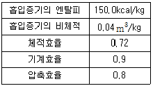
- 약 25.9kW
- 약 40.0kW
- 약 50.0kW
- 약 68.8kW
(정답률: 44%)
32. 다음의 이상적인 1단 증기압축 냉동사이클에 대한 설명으로 틀린 것은?
- 압축과정은 등엔트로피 과정이다.
- 팽창과정은 등엔탈피 과정이다.
- 응축과정은 등적 과정이다.
- 증발과정은 등압 과정이다.
(정답률: 63%)
33. 흡수식 냉동기를 이용함에 따른 장점으로 가장 거리가 먼 것은?
- 여름철 피크전력이 완화된다.
- 대기압 이하로 작동하므로 취급에 위험성이 완화된다.
- 가스수요의 평준화를 도모할 수 있다.
- 야간에 열을 저장하였다가 주간의 부하에 대응할 수 있다.
(정답률: 67%)
34. 증발온도 -30℃, 응축온도 45℃에서 작동되는 이상적인 냉동기의 성적계수은?
- 1.2
- 3.2
- 5.0
- 5.4
(정답률: 70%)
35. 냉수나 브라인의 동결방지용으로 사용하는 것은?
- 고압차단장치
- 차압제어장치
- 증발압력제어장치
- 유압보호스위치
(정답률: 64%)
36. 냉동능력이 15kW인 냉동기에서 수냉식 응축기의 냉각수 입ㆍ출구의 온도차가 8℃일 때, 냉각수 유량은? (단, 압축기의 소요동력은 5kW, 물의 비열은 1kcal/kgㆍ℃이다)
- 약 1397kg/h
- 약 2150kg/h
- 약 1852kg/h
- 약 2500kg/h
(정답률: 55%)
37. 다음 중 열전도도가 가장 큰 것은?
- 수은
- 석면
- 동관
- 질소
(정답률: 71%)
38. 물을 냉매로 하고 LiBr를 흡수제로 하는 흡수식 냉동장치에서 장치의 성능을 향상시키기 위하여 열교환기를 설치하였다. 이 열교환기의 기능을 가장 잘 나타낸 것은?
- 응축기 입구 수증기와 증발기 출구수증기의 열 교환
- 발생기 출구 LiBr 수용액과 응축기 출구 물의 열 교환
- 발생기 출구 LiBr 수용액과 흡수기 출구 LiBr수용액의 열 교환
- 흡수기 출구 LiBr 수용액과 증발기 출구 수증기의 열 교환
(정답률: 60%)
39. 쇼케이스형 냉동장치의 종류가 아닌 것은?
- 밀폐형 쇼케이스
- 반밀폐형 쇼케이스
- 개방형 쇼케이스
- 리칭형(REACH) 쇼케이스
(정답률: 52%)
40. 암모니아를 사용하는 냉동기의 압축기에서 압축비(P2/P1)가 5, 폴리트로피 지수(n)는 1.3, 간극비(ε)가 0.⑤일 때, 체적효율은?
- 약 0.88
- 약 0.62
- 약 0.38
- 약 0.22
(정답률: 32%)
3과목: 공기조화
41. 다음 중 에너지 절약에 가장 효과적인 공기조화방식은? (단, 설비비는 고려하지 않는다.)
- 각층 유닛 방식
- 이중 덕트 방식
- 멀티존 유닛 방식
- 가변 풍량 방식
(정답률: 63%)
42. 덕트의 마찰저항을 증가시키는 요인은 여려 가지가 있다. 다음 중 값이 커지면 마찰저항이 감소되는 것은?
- 덕트재료의 마찰 저항계수
- 덕트 길이
- 덕트 직경
- 풍속
(정답률: 74%)
43. 가변풍량 방식(VAV)의 특징에 관한 설명으로 틀린 것은?
- 시운전시 토출구의 풍량 조정이 간단하다.
- 동시사용률을 고려하여 기기용량을 결정하게 되므로 설비용량을 적게 할 수 있다.
- 부하변동에 대하여 제어응답이 빠르므로 거주성이 향상된다.
- 덕트의 설계시공이 복잡해진다.
(정답률: 55%)
44. 공기 중의 악취제거를 위한 공기정화용 에어필터로 가장 적합한 것은?
- 유닛형 필터
- 점착식 필터
- 활성탄 필터
- 전기식 필터
(정답률: 75%)
45. 애어필터의 설치에 관한 설명으로 틀린 것은?
- 필터는 스페이스가 크므로 공조기 내부에 설치한다.
- 필터는 전풍량을 취급하도록 한다.
- 로울형의 필터로 사용할 때는 필터 전면에 해체와 반출이 용이하도록 공간을 두어야 한다.
- 병원용 필터를 설치할 때는 프리필터를 고성능 필터 뒤에 설치한다.
(정답률: 73%)
46. 다음 선도에서 습공기를 상태1에서 상태2로 변화시킬 때 현열비(SHF)를 표현으로 옳은 것은?
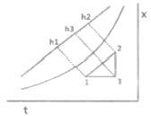
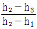
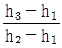
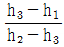
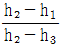
(정답률: 62%)
47. 습공기의 온도가 20℃, 절대습도가 0.0072 kg/kg'일 때 이 습공기의 엔탈피은? (단, 건조공기의 정압비열은 0.24kcal/kgㆍ℃, 0℃에서 포화수의 증발잠열은 598.3kcal/kg, 수증기의 정압비열은 0.44kcal/kgㆍ℃이다)
- 약 2.17kcal/kg
- 약 9.17kcal/kg
- 약 15.17kcal/kg
- 약 20.17kcal/kg
(정답률: 47%)
48. 일반적으로 난방부하를 계산할 때 실내 손실열량으로 고려해야 하는 것은?
- 인체에서 발생하는 잠열
- 극간풍에 의한 잠열
- 조명에서 발생하는 현열
- 기기에서 발생하는 현열
(정답률: 66%)
49. 다음은 공기의 성질에 관한 설명으로 틀린 것은?
- 절대습도는 습공기를 구성하고 있는 수증기와 건공기와의 질량비이다.
- 상대습도는 공기중에 포함되어 있는 수증기의 양과 동일온도에서 최대로 포함될 수 있는 수증기 양의 비이다.
- 포화공기는 최대로 수분을 수용하고 있는 상태의 공기를 말한다.
- 비교습도는 수증기 분압과 그 온도에 있어서의 포화 공기의 수증기 분압과의 비를 말한다.
(정답률: 49%)
50. 실온이 25℃, 상대습도 50%일 때, 냉방부하 중 실내 현열부하가 45000 kcal/h, 실내 잠열부하가 22000kcal/h, 외기부하가 5800 kcal/h이라면 현열비(SHF)은?
- 0.41
- 0.51
- 0.67
- 0.97
(정답률: 56%)
51. 팬코일 유닛방식을 배관방식으로 분류할 때 각 방식의 특징에 관한 설명으로 틀린 것은?
- 4관식은 혼합손실은 없으나 배관의 양이 증가하므로 공사비 및 배관설치용 공간이 증가한다.
- 3관식은 환수관에서 냉수와 온수가 혼합되므로 열손실이 없다.
- 3관식은 온수 공급관, 냉수 공금관, 냉온수 겸용 환수관으로 구성 되어 있다.
- 4관식은 냉수배관, 온수배관을 설치하여 각 계통마다 동시에 냉난방을 자유롭게 할 수 있다.
(정답률: 69%)
52. 다음 중 축류형 취출구의 종류가 아닌 것은?
- 펑커루버
- 그릴형 취출구
- 라인형 취출구
- 팬형 취출구
(정답률: 57%)
53. 간이계산법에 의한 건평 150m2에 소요되는 보일러의 급탕부하은? (단, 건물의 열손실은 90kcal/m2ㆍh, 급탕량은 100kg/h, 급수 및 급탕 온도는 각각 30℃, 70℃이다.)
- 3500kcal/h
- 4000kcal/h
- 13500kcal/h
- 17500kcal/h
(정답률: 33%)
54. 에어와셔 내에 온수를 분무할 때 공기는 습공기 선도에서 어떠한 변화과정이 일어나는가?
- 가습ㆍ냉각
- 과냉각
- 건조ㆍ냉각
- 감습ㆍ과열
(정답률: 74%)
55. 다음의 냉방부하 중 실내 취득열량에 속하지 않는 것은?
- 인체의 발생 열량
- 조명 기기에 의한 열량
- 송풍기에 의한 취득열량
- 벽체로부터의 취득열량
(정답률: 62%)
56. 다음은 증기난방에 사용되는 기기로 가장 거리가 먼 것은?
- 팽창탱크
- 응축수 저장탱크
- 공기 배출밸브
- 증기 트랩
(정답률: 58%)
57. 비엔탈피가 12kcal/kg인 공기를 냉수코일을 이용하여 10kcal/kg까지 냉각제습하고자 한다. 이 때 코일 입출구의 온도차를 5℃로 할 때의 냉수 순환 펌프의 수량은? (단, 코일 통과 풍량 6000m3/h, 공기의 비체적은 0.835m3/kg이다.)
- 약 0.80 ℓ/min
- 약 47.9 ℓ/min
- 약 63.4 ℓ/min
- 약 73.8 ℓ/min
(정답률: 39%)
58. 주어진 계통도와 같은 공기조화장치에서 공기의 상태변화를 습공기 선도상에 나타내었다. 계통도의 '5'점은 습공기선도에서 어느 점인가?
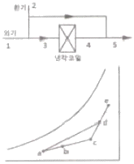
- a
- b
- c
- d
(정답률: 55%)
59. 보일러에서 방열기까지 보내는 증기관과 환수관을 따로 배관하는 방식으로서 증기와 응축수가 유동하는데 서로 방해가 되지 않도록 증기트랩을 설치하는 증기난방방식은?
- 트랩식
- 상향급기관
- 건식환수법
- 복관식
(정답률: 64%)
60. 축열조의 특징으로 틀린 것은?
- 피크 컷에 의해 열원장치의 용량을 최소화할 수 있다.
- 부분부하 운전에 쉽게 대응하기 어렵다.
- 열원기기 운전시간을 연장하여 장래의 부하증가에 대응할 수 있다.
- 열원기기를 고부하 운전함으로써 효율을 향상시킨다.
(정답률: 59%)
4과목: 전기제어공학
61. 단자전압 300V, 전기자저항 0.3Ω인 직류분권발전기가 있다. 전부하의 경우 전기자전류가 50A 흐른다고 할 때 이 전동기의 기동전류를 정격시의 1.7배로 하려면 기동저항은 약 몇 Ω인가?
- 2.8
- 3.2
- 3.5
- 3.8
(정답률: 44%)
62. 다음 그림과 같은 선도에서 전달함수 C(s)/R(s)를 나타낸 것은?
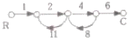
- -8/9
- 4/5
- -48/53
- -1⑤/77
(정답률: 65%)
63. 제어장치의 구동장치에 따른 분류에서 타력제어와 비교한 자력제어의 특징 중 틀린 것은?
- 저비용
- 구조 간단
- 확실한 동작
- 빠른 조작 속도
(정답률: 60%)
64. 기억과 판단기구 및 검출기를 가진 제어방식은?
- 시한제어
- 피드백제어
- 순서프로그램제어
- 조건제어
(정답률: 69%)
65. 철심을 가진 변압기 모양의 코일에 교류와 직류를 중첩하여 흘리면 교류임피던스는 중첩된 직류의 크기에 따라 변하는데 이 현상을 이용하여 전력을 증폭하는 장치는?
- 회전증폭기
- 자기증폭기
- 사이리스터
- 차동변압기
(정답률: 61%)
66. PLC의 구성에 해당되지 않는 것은?
- 입력장치
- 제어장치
- 주변용장치
- 출력장치
(정답률: 67%)
67. 변압기의 부하손(동손)에 대한 특성 중 맞는 것은?
- 동손은 주파수에 의해 변화한다.
- 동손은 온도 변화와 관계없다.
- 동손은 부하 전류에 의해 변화한다.
- 동손은 자속 밀도에 의해 변화한다.
(정답률: 52%)
68. 전기력선의 기본 성질에 대한 설명으로 틀린 것은?
- 전기력선의 방향은 그 점의 전계의 방향과 일치한다.
- 전기력선은 전위가 높은 점에서 낮은 점으로 향한다.
- 두 개의 전기력선은 전하가 없는 곳에서 교차한다.
- 전기력선의 밀도는 전계의 세기와 같다.
(정답률: 62%)
69. 그림과 같은 접점회로의 논리식으로 옳은 것은?
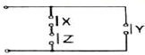
- XㆍYㆍZ
- (X + Y)ㆍZ
- XㆍZ + Y
- X + Y + Z
(정답률: 68%)
70. 극수가 4인 유도전동기가 900rpm으로 회전하고 있다. 현재 슬립속도는 20rpm일 때 주파수는 약 몇 Hz인가?
- 7.5
- 28
- 31
- 37
(정답률: 36%)
71. 피드백제어에서 제어요소에 대한 설명 중 옳은 것은?
- 조작부와 검출부로 구성되어 있다.
- 동작신호를 조작량으로 변화시키는 요소이다.
- 제어를 받는 출력량으로 제어대상에 속하는 요소이다.
- 동작신호를 검출부로 변화시키는 요소이다.
(정답률: 51%)
72. 전류계와 병렬로 연결되어 전류계의 측정범위를 확대해주는 것은?
- 배율기
- 분류기
- 절연저항
- 접지저항
(정답률: 65%)
73. R-L-C 직렬회로에서 전압(E)과 전류(I) 사이의 관계가 잘못 설명된 것은?
- XL ＞ XC인 경우 I는 E보다 θ만큼 뒤진다.
- XL ＜ XC인 경우 I는 E보다 θ만큼 앞선다.
- XL = XC인 경우 I는 E와 동상이다.
- XL ＜ (XC - R)인 경우 I는 E보다 θ만큼 뒤진다.
(정답률: 63%)
74. 미소한 전류나 전압의 유무를 검출하는데 사용되는 계기는?
- 검류계
- 전위차계
- 회로시험계
- 오실로스코프
(정답률: 63%)
75. 다음 논리식 중 틀린 것은?
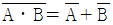
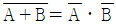
- A + A = A
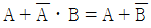
(정답률: 62%)
76. 정격 600W 전열기에 정격전압의 80%를 인가하면 전력은 몇 W로 되는가?
- 384
- 486
- 545
- 614
(정답률: 43%)
77. 물체의 위치, 방위, 자세 등의 기계적 변위를 제어량으로 해서 목표값의 임의의 변화에 대응하도록 구성된 제어계는?
- 프로그램 제어
- 정치 제어
- 공정 제어
- 추종 제어
(정답률: 64%)
78. 와류 브레이크(eddy current break)의 특징이나 특성에 대한 설명으로 옳은 것은?
- 전기적 제동으로 마모부분이 심하다.
- 정지시에는 제동토크가 걸리지 않는다.
- 제동토크는 코일의 여자전류에 반비례한다.
- 제동시에는 회전에너지가 냉각작용을 일으키므로 별도의 냉각방식이 필요 없다.
(정답률: 47%)
79. 3상 동기발전기를 병렬운전하는 경우 고려하지 않아도 되는 것은?
- 기전력 파형의 일치 여부
- 상회전방향의 동일 여부
- 회전수의 동일 여부
- 기전력 주파수의 동일 여부
(정답률: 50%)
80. 입력전압을 변화시켜서 전동기의 회전수를 900rpm으로 조정하였을 때 회전수는 제어의 구성요소 중 어느 것에 해당하는가?
- 목표값
- 조작량
- 제어량
- 제어대상
(정답률: 40%)
5과목: 배관일반
81. 냉동배관 시 플렉시블 조인트의 설치에 관한 설명으로 틀린 것은?
- 가급적 압축기 가까이에 설치한다.
- 압축기의 진동방향에 대하여 직각으로 설치한다.
- 압축기가 가동할 때 무리한 힘이 가해지지 않도록 설치한다.
- 기계ㆍ구조물 등에 접촉되도록 견고하게 설치한다.
(정답률: 56%)
82. 압력탱크 급수방법에서 사용되는 탱크의 부속품이 아닌 것은?
- 안전밸브
- 수면계
- 압력계
- 트랩
(정답률: 61%)
83. 배수배관의 관이 막혔을 때 이것을 점검, 수리하기 위해 청소구를 설치하는데, 설치 필요 장소로 적절하지 않은 곳은?
- 배수 수평 주관과 배수수평 분기관의 분기점에 설치
- 배수관이 45° 이상의 각도로 방향을 전환하는 곳에 설치
- 길이가 긴 수평 배수관인 경우 관경이 100A 이하일 때 5m 마다 설치
- 배수 수직관의 제일 밑부분에 설치
(정답률: 61%)
84. 냉매의 유속이 낮아지게 되면 흡입관에서 오일회수가 어려워지므로 오일회수를 용이하게 하기 위하여 설치하는 것은?
- 이중입상관
- 루프 배관
- 액 트랩
- 리프팅 배관
(정답률: 63%)
85. 급탕배관에 대한 설명으로 틀린 것은?
- 단관식의 경우급수관경보다 큰 관을 사용해야 한다.
- 하향식 공급 방식에서는 급탕관 및 복귀관은 모두 선하향 구배로 한다.
- 보통 급탕관은 수명이 짧으므로 장래에 수리, 교체가 용이하도록 노출 배관하는 것이 좋다.
- 연관은 열에 강하고 부식도 잘되지 않으므로 급탕배관에 적합하다.
(정답률: 49%)
86. 펌프 주위배관의 시공에 관한 사항으로 틀린 것은?
- 풋 밸브(foot valve) 등 모든 관의 이음은 수밀, 기밀을 유지할 수 있도록 한다.
- 흡입관의 길이는 가능한 한 짧게 배관하여 저항이 적도록 한다.
- 흡입관의 수평배관은 펌프를 향하여 하향 구배로 한다.
- 양정이 높을 경우에는 펌프 토출구와 게이트 밸브와의 사이에 체크밸브를 설치한다.
(정답률: 52%)
87. 방열기 주위배관에 대한 설명으로 틀린 것은?
- 방열기 주위는 스위블 이음으로 배관한다.
- 공급관은 앞쪽올림의 역구배로 한다.
- 환수관은 앞쪽내림의 순구배로 한다.
- 구배를 취할 수 없거나 수평주관이 2.5m이상일 때는 한 치수 작은 지름으로 한다.
(정답률: 61%)
88. 급탕설비에 관한 설명으로 틀린 것은?
- 개별식 급탕법은 욕실, 세면장, 주방 등에 소형의 가열기를 설치하여 급탕하는 방법이다.
- 온수보일러에 의한 간접가열방식이 직접가열방식보다 저탕조내부에 스케일이 잘 생기지 않는다.
- 급수관에서 공급된 물이 코일 모양으로 배관된 가열관을 통과하는 동안에 가스 불꽃에 의해 가열되어 급탕하는 장치를 순간온수기라 한다.
- 열효율은 양호하지만 소음이 심하여 S형, Y형의 사이렌서를 부착하며, 사용증기압력은 약 10~40MPa인 급탕법을 기수혼합식이라 한다.
(정답률: 59%)
89. 배관 도면에서 각 장치와 관에 번호를 부여하는 라인 인덱스의 기재 순서 예로 ‘4-2B-N-15-39-CINS'로 기재하는데 이 중 ’39‘는 무엇을 나타내는 표시인가?
- 관의 호칭지름
- 배관재료의 종류
- 유체별 배관번호
- 장치번호
(정답률: 46%)
90. 주철관 이음에 해당되는 것은?
- 납땜 이음
- 열간 이음
- 타이튼 이음
- 플라스탄 이음
(정답률: 58%)
91. 대ㆍ소변기 및 이와 유사한 용도를 갖는 기구로부터 배수 등 인간의 분뇨를 포함하는 배수의 종류는?
- 우수
- 오수
- 잡배수
- 특수배수
(정답률: 72%)
92. 저온수 난방장치에서 배기관의 설치 위치는?
- 팽창관 하단
- 순환펌프 출구
- 드레인관 하단
- 팽창탱크 상단
(정답률: 55%)
93. 다음 공조용 배관 중 배관 샤프트 내에서 일반적으로 단열시공을 하지 않는 배관은?
- 온수관
- 냉수관
- 증기관
- 냉각수관
(정답률: 65%)
94. 배관의 하중을 위에서 걸어 당겨 지지하는 행거(hanger) 중 상하 방향의 변위가 없는 개소에 사용하는 것은?
- 콘스타트 행거(constant hanger)
- 리지드 행거(rigid hanger)
- 베리어블 행거(variable hanger)
- 스프링 행거(spring hanger)
(정답률: 51%)
95. 가스배관 외부에 표시하지 않는 것은? (단, 지하에 매설하는 경우는 제외)
- 사용가스명
- 최고사용압력
- 유량
- 가스흐름방향
(정답률: 62%)
96. 증기와 응축수의 온도차를 이용하여 응축수를 배출하는 열동식 트랩이 아닌 것은?
- 벨로즈 트랩
- 디스크 트랩
- 바이메탈식 트랩
- 다이어프램식 트랩
(정답률: 49%)
97. 복사난방 배관에서 코일의 구배로 옳은 것은?
- 상향식 : 올림구배, 하향식 : 올림구배
- 상향식 : 내림구배, 하향식 : 올림구배
- 상향식 : 내림구배, 하향식 : 내림구배
- 상향식 : 올림구배, 하향식 : 내림구배
(정답률: 64%)
98. 배수관에 트랩을 설치하는 가장 큰 목적은?
- 유체의 역류방지를 위해
- 통기를 원활하게 하기 위해
- 배수속도를 일정하게 하기 위해
- 유해, 유취 가스의 역류 방지를 위해
(정답률: 57%)
99. 개별식 급탕 방법의 특징이 아닌 것은?
- 배관의 길이가 길어 열손실이 크다.
- 사용이 쉽고 시설이 편리하다.
- 필요한 즉시 따뜻한 온도의 물을 쓸 수 있다.
- 소형 가열기를 급탕이 필요한 곳에 설치하는 방법이다.
(정답률: 68%)
100. 급탕설비에서 급탕온도가 70℃, 복귀탕 온도가 60℃일 때, 온수 순환 펌프의 수량은? (단, 배관계의 총 손실 열량은 3000kcal/h로 한다.)
- 50 L/min
- 5 L/min
- 45 L/min
- 4.5 L/min
(정답률: 54%)
열원 사이에서 열이 전달될 때, 열원과 주변 환경 간의 엔트로피 변화량은 다음과 같이 나타낼 수 있다.
ΔS열원 = -Q/T열원 + Q/T주변
ΔS주변 = Q/T열원 - Q/T주변
여기서, T열원 > T주변 이므로, ΔS열원 < 0, ΔS주변 > 0 이다.
따라서, 두 열원의 총 엔트로피 변화량은 ΔS총 = ΔS열원 + ΔS주변 = Q/T주변 - Q/T열원 이다.
이를 식으로 나타내면, ΔS총 = Q(T주변 - T열원)/(T주변ㆍT열원) 이므로, ""가 정답이다.